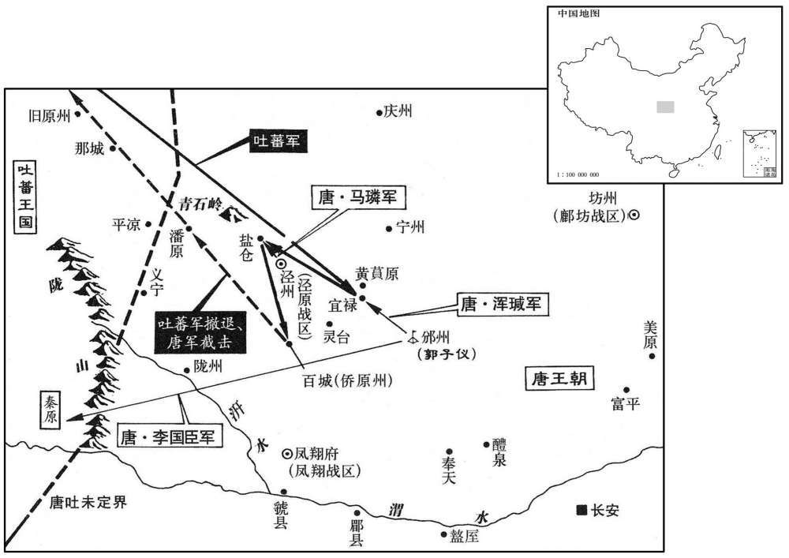
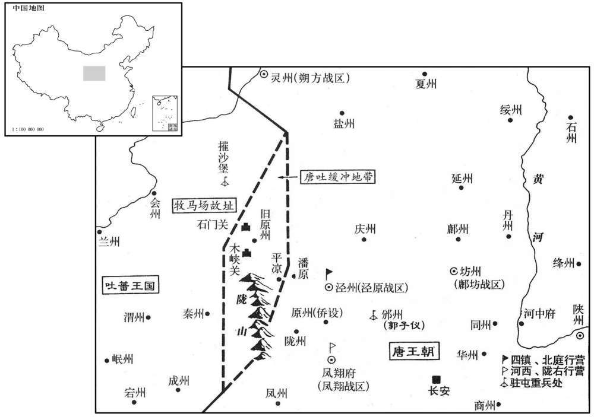

公元773年资治通鉴：本年记事、原文与白话对照
按原书编年位置阅读；追叙和史论不等于本年发生的事件。白话采用所据译本，缺译不以生成译文补齐。
卷224 · 本年记事
公元773年 · 唐代宗睿文孝武皇帝大历八年
八年〔（癸丑、七七三）〕
上传原文的注释括号有异常，字符原样保留；无法可靠划分的段落默认全文显示。
本年事件索引（现代整理）

本年形势与背景参考图

本年形势与背景参考图
春，正月，昭义节度使、相州刺史薛嵩薨。子平，年十二，将士胁以为帅，平伪许之；即而让其叔父崿，〔相，昔亮翻。帅，所类翻。崿，五各翻。〕夜奉父丧、逃归乡里。壬午，制以崿知留后。
春季，正月，昭义节度使、相州刺史薛嵩去世。他的儿子薛平年方十二，将士们胁迫他出任主帅，薛平假装同意，不久将其位让给他叔父薛，夜里护送着父亲的遗体，逃归乡里。壬午（初六），代宗颁制任命薛担任留后。
二月，壬申，永平节度使令狐彰薨。彰承离乱之后，治军劝农，府廪充实。〔治，直之翻。〕时藩镇率皆跋扈，独彰贡赋未尝阙；岁遣兵三千诣京西防秋，自赍粮食，道路供馈皆不受，所过秋毫不犯。疾亟，召掌书记高阳齐映，〔高阳，汉县，属涿郡，唐属瀛州。〕与谋后事，映劝彰请代人，遣子归私第；彰从之，遗表称；「昔鱼朝恩破史朝义，欲掠滑州，臣不听，由是有隙。及朝恩诛，值臣寝疾，以是未得入朝，生死愧负。臣今必不起，仓库畜牧，先已封籍，军中将士，州县官吏，按堵待命。〔将，即亮翻。朝，直遥翻。〕伏见吏部尚书刘晏、工部尚书李勉可委大事，愿速以代臣。臣男建等，今勤归东都私第。」彰薨，将士欲立建，建誓死不从，举家西归。三月，丙子，以李勉为永平节度使。
二月壬申（二十七日），永平节度使令狐彰去世。令狐彰在滑州、毫州离乱之后，整治军队，劝励农桑，府库充实。当时各藩镇大都飞扬跋扈，唯独令狐彰上交的赋税从未缺过；每年派三千士兵到京西去防御吐蕃，他们自备粮食，路途中各方供给和馈赠的东西他们都不按受，所经之处秋毫不犯。在病重时，令狐彰召见掌书记高阳人齐映，与他商量后事，齐映劝令狐彰请求朝廷派替代他的人，并遣送儿子回家。令狐彰接受了他的建议，写下遗表声称：“过去鱼朝恩打败了史朝义，想在滑州掳掠，我没有听从，从此有了嫌隙。等到鱼朝恩被杀时，正值我病卧在床，因此没有能够入朝，生死都感到惭愧。今天我必定一病不起，仓库畜牧早已封存注册，军中将士、州县官吏都相安待命。我看到吏部尚书刘晏、工部尚书李勉可以委以重任，但陛下能迅速地让他们来取代我。我的儿子令狐建等人，如今已勒令他们回到东都私宅。”令狐彰去世后，将士们想立令狐建为节度使，令狐建誓死不从，举家西归东都。三月丙子（初一），代宗任命李勉为永平节度使。
吏部侍郎徐浩、薛邕，皆元载、王缙之党；浩妾弟侯莫陈怤为美原尉，〔载，祖亥翻，又音如字。缙，音晋。怤，芳俱翻。咸亭二年，分富平、华原及同州之蒲城，以故土门县置美原县。〕浩属京兆尹杜济虚以知驿奏优，〔奏优者，言邮驿往来，供给车马、薪刍、粮用，皆无阙乏，优于余县也。属，之欲翻。〕又属邕拟长安尉。怤参台，御史大夫李栖筠劾奏其状，〔筠，俞轮翻。劾，户盖翻，又户得翻。〕敕礼部侍郎万年于劭等按之。劭奏邕罪在赦前，应原除，上怒。夏，五月，乙酉，贬浩明州别驾，邕歙州刺史；丙戍，贬济杭州刺史，邵桂州长史，朝廷稍肃。〔明州，京师东南四千一百里。歙州，，京师东南三千六百六十七里。杭州，京师东南三千五百五十六里。桂州，京师水陆路四千七百六十里。歙，音摄。杭，户刚翻。长，知两翻。考异曰：实录云：「侯莫陈怤为美原尉。」旧李栖筠传云：「华原尉侯莫陈怤，以主邮传优，改长安尉。」又曰：「栖筠劾奏浩等，上依违未决。属月蚀，上问其故。对曰『臣闻日蚀修德，月蚀修刑，今诬上行私之罪未理，此天所以儆戒于明圣。』由是感寤，坐怤者皆贬谪。自此朝纲益振，百度肃然。」按己丑月乃食，于时未也。今不取。
本段缺少可靠对应白话，原文完整保留；未使用生成译文。
辛卯，郑王邈薨，赠昭靖太子。〔邈，上次子也。〕
辛卯（十七日），郑王李邈去世，代宗追封他为邵靖太子。
回纥自干元以来，岁求和市，每一马易四十缣，动至数万匹，马皆驽脊无用；朝廷苦之，所市多不能尽其数，回纥待遣、继至者常不绝于鸿胪。至是，上欲悦其意，命尽市之。秋，七月，辛丑，回纥辞归，载赐遗及马价，共享车千余乘。〔遗，惟季翻。乘，承正翻。〕
从乾元以来，回纥每年都请求唐朝和市，每一匹马换四十匹缣帛，动辄就交换数万匹马，而这些马全都跑不快，瘦弱无用。朝廷以此为苦，多不能尽数购买，因此在鸿胪寺等待回去和接踵而来的回纥人常常络绎不绝。到这时候，代宗想求得回纥的欢心，下令将他们的马全部买下。秋季，七月辛丑（二十八日），回纥人辞行归去，车上装载着朝廷赏赐和换马得到的财物，总共用了一千多辆车。
八月，己未，吐蕃六万寇灵武，践秋稼而去。〔考异曰：汾阳家：「八月，吐蕃五千骑至灵州南七级渠，公遣温儒雅、从政等连兵救之。九月，大破之。』今从实录。
本段缺少可靠对应白话，原文完整保留；未使用生成译文。
辛未，幽州节度使朱泚遣弟滔将五千精骑诣泾州防秋。自安禄山反，幽州兵未常为用，滔至，上大喜，劳赐甚厚。〔劳，力到翻。〕
辛未（二十八日），幽州节度使朱派遣弟弟朱滔率领五千精锐骑兵到泾州防御吐蕃。从安禄山造反以来，幽州的军队很少为朝廷所用，朱滔到来，代宗十分高兴，给予丰厚的赏赐和犒劳。
九月，壬午，循州刺史哥舒晃杀岭南节度使吕崇贲，据岭南反。
九月壬午（十日），循州刺史哥舒晃杀害岭南节度使吕崇贲，占据岭南造反。
癸未，晋州男子郇模，〔郇，须伦翻；古国名，后世以国为姓。〕以麻辫发，持竹筐苇席，哭于东市。人问其故，对曰：「愿献三十字，一字为一事；若言无所取，请以席裹尸，贮筐中，弃于野。」京兆以闻。上召见，赐新衣，馆于客省。〔时于古银台门置客省，或四方奏计未遣者、上书言事忤旨者及蕃客禾报者，皆馆于其中，常数百人。馆，古玩翻。〕其言「团」者，请罢诸州团练使也；「监」者，请罢诸道监军使也。〔监，古衔翻。〕
癸未（十一日），晋州一个名叫郇模的男子用麻绳扎辫，手执竹筐苇席，在东市哭泣。有人问他为什么这样做，他回答说：“希望献上三十个字，每一字代表一件事；如果我说的字没有可取之处，请你们杀了我用苇席裹尸，装进竹筐中，再抛到荒郊野外。”京兆尹向代宗奏报此事。代宗召见郇模，赏赐他新衣服，将他安置在客省住下。郇模所说的“团”字，是请求撤销各州的团练使；“监”字，是请求撤销各道的监军使。
魏博节度使田承嗣为安、史父子立祠堂，谓之四圣，〔为，于伪翻。〕且求为相；上令内侍孙知古因奉使讽令毁之。冬，十月，甲辰，加承嗣同平章事以褒之。
魏博节度使田承嗣为安禄山、史思明父子建立祠堂，称他们为四圣，并且请求让自己出任宰相。代宗命令内侍孙知古奉命出使，婉言劝说田承嗣拆毁祠堂。冬季，十月甲辰（初二），代宗加封田承嗣为平章事来表彰他。
灵州破吐蕃万余众。吐蕃众十万寇泾、邠、郭子仪遣朔方兵马使浑瑊将步骑五千拒之。庚申，战于宜禄。〔宋白曰：宜禄，本汉鹑觚县地，后魏熙平二年，分鹑觚县置东盘县，废帝元年，以县南临宜禄川，改为宜禄县。九域志：宜禄在邠州西六十里。考异曰：实录作「甲午」，盖奏到之日也。邠志云「十八日」，与唐历合。今从之。」瑊登黄萯原，〔萯，音倍。黄萯，草名。盖其地多黄萯草，因以名原。〕望虏，〔句断。〕命据险布拒马以备其驰突。宿将史抗、温儒雅等意轻瑊，不用其命；瑊召使击虏，则已醉矣；见拒马，曰：「野战，鸟用此为！」命撤之。叱骑兵冲虏陈，不能入而返；〔陈，读曰阵。〕虏蹑而乘之，官军大败，士卒死者什七八，居民为吐蕃所掠千余人。
灵州的军队打败了吐蕃一万多人。吐蕃十万军队进犯泾州、州，郭子仪派遣朔方兵马使浑率领步骑兵五千人前去抵抗。庚申（十八日），双方在宜禄交战。浑登上黄原了望敌军阵势，命令部队占据险要地形布列拒马枪，以防备战马奔突。老将史抗、温儒雅等人瞧不起浑，不听从他的命令；浑派人召呼他们去攻击敌人，他们却已经喝醉了，看见拒马枪，说道：“野地作战，这东西有什么用！”便命令部下撤去。他们又大声呵斥骑兵去冲击敌军阵营，骑兵没能突入敌阵就返回来了，敌军随后出击，官军大败，战死的士兵有十分之七八，当地一千多居民被吐蕃掠走。
甲子，马璘与吐蕃战于盐仓，又败。〔盐仓，在泾州城西。考异曰：邠志曰：「十月，西戎寇邠，泾原节度使马公袭之，郭公使其将浑瑊率步骑五千为之掎角。十八日，师登黄萯原，望见吐蕃，瑊急引其众前据乘险，仍设拒马枪以遏驰突之势。史抗、温儒雅等宿将五六人任气自负，轻侮都将，置酒高饮；瑊使召之，至，则皆醉矣。见拒马枪，曰：『野地见贼须击，设此何为！』命去之。戎众即陈，抗等叱马军使驰贼，及回，自冲其军，吐蕃蹑背而入，我师大败，卒之不死者什二三。」汾阳家传：「十月，吐蕃四节度历泾川，过阁川南，于渭河合军，公遗浑瑊等前后相接以待之。二十四日，大战于长武城，我师败绩。瑊等突出，乃免。」唐历：「十八日，吐蕃寇邠州，瑊与战于宜禄，官军大败。二十二日，马璘出兵击之，又败。二十七日己巳，璘遣军斫吐蕃营，破之。二十八日庚午，诏追诸道兵屯西郊。十一月一日，吐蕃退。」段公别传曰：「八年冬十月二十三日，犬戎入寇，大战于盐仓，我军与朔方兵马使浑瑊之众供力齐攻，防秋诸军望贼而退，于是我师不利。」今日从邠志、唐历、段公家传。事从实录、旧传，兼采诸书。〕璘为虏所隔，逮暮未还，泾原兵马使焦令谌等与败卒争门而入。或劝行军司马段秀实乘城拒守，秀实曰：「大帅未知所在，当前击虏，岂得苟自全乎！」召令谌等让之曰：「军法，失大将，麾下皆死。诸君忘其死邪！」令谌等惶惧拜请命。〔帅，所类翻。将，即亮翻。〕秀实乃发城中兵未战者悉出，陈于东原，〔陈，读曰阵。〕且收散兵，为将力战状。吐蕃畏之，稍却。即夜，璘乃得还。
甲子（二十二日），马在盐仓与吐蕃交战，又遭失败。马被敌军拦隔，到傍晚还没有回来，泾原兵马使焦令谌等人和败兵争相夺门入城。有人劝说行军司马段秀实登城拒守，段秀实回答说：“主帅不知在何处，当前的任务是攻击敌军，难道能苟且求生吗！”段秀实召见焦令谌等人，责备他们说：“按军法规定，失去大将，部下都得处死。各位忘掉了死吗！”焦令谌等人十分慌恐，跪拜在地，请求段秀实给他们下命令。于是段秀实派遣所有城中没有参加过战斗的士兵出城，在东原布阵，并且收罗散兵游勇，摆出准备拼死作战的姿态。吐蕃很畏惧，逐渐退却。入夜，马才得以回城。
郭子仪召诸将谋曰：「败军之罪在我，不在诸将。然朔方兵精闻天下，〔闻，音问。〕今为虏败，何策可以雪耻﹖」〔败，补卖翻。〕莫对。浑瑊曰：「败军之将，不当复预议。〔复，扶又翻；下同〕然愿一言今日之事，惟理瑊罪，〔理，治也。〕不则再见任。」〔不，读曰否。〕子仪赦其罪，使将兵趣朝那。虏即破官军，欲攘汧、陇。盐州刺史李国臣曰：「虏乘胜必犯郊畿，我掎其后，虏必返顾。」乃引兵趣秦原，〔括地志曰：秦州清水县有秦亭、秦谷，非子所封地也。趣，七喻翻。〕鸣鼓而西。虏闻之，至百城，返，〔百城，即泾州灵台县之百里城。〕浑瑊邀之于隘，尽复得其所掠；马璘亦出精兵袭虏辎重于潘原，〔重，直用翻。〕杀数千人，虏遂遁去。
郭子仪召集各位将领商议，他说：“军队失败之罪在于我，而不在各位将领。然而朔方军队兵强马壮天下闻名，如今被敌虏打败，用什么计策可以雪耻呢？”各位将领没能回答，浑说：“败军将领，不应当再参预商议。然而我愿意谈一谈今天的事，此事只该治我的罪，否则就再让我去杀敌。”郭子仪赦免其罪，让他率军奔赴朝那。吐蕃既已打败官军，想要掳掠州和陇州。盐州刺史李国臣说：“敌虏必定乘胜进犯京畿地区，如果我军从背后牵制，敌虏一定会回师照应。”于是李国臣带领军队奔赴秦原，一路击鼓西行。吐蕃听说后，到达百城就往回撤。浑在关隘要地阻截他们，夺回了被他们掳掠走的所有居民和财物，马也派出精锐部队在潘原袭击的辎重，杀死数千人，于是吐蕃军队便逃跑了。
乙丑，以江西观察使路嗣恭〔【章：十二行本「恭」下有「兼岭南节度使」六字；乙十一行本同。】〕讨哥舒晃。
乙丑（二十三日），朝廷让江西观察使路嗣恭讨伐哥舒晃。
初，元载尝为西州刺史，知河西、陇右山川形势。是时，吐蕃数为寇，〔数，所角翻。〕载言于上曰：「四镇、北庭即治泾州，无险要可守。陇山高峻，南连秦岭，〔秦岭，即商岭。〕北抵大河。今国家西境尽潘原，而吐蕃戍摧沙堡，原州居其中间，当陇山之口，其西皆监牧故地。草肥水美，平凉在其东，〔唐原州治古高平，当陇道之要。汉光武取陇右，先降高峻而后可以蹙隗嚣。赫连勃勃据高平，乘高以窥陇东、岭北，得以病姚兴，诚要害之地也。平凉县属原州，西南即陇山之六盘关。〕独耕一县，可给军食，故垒尚存，吐蕃弃而不居。每岁盛夏，吐蕃畜牧青海，去塞甚远，若乘间筑之，〔间，古苋翻。〕二旬可毕。移京西军戍原州，移郭子仪军戍泾州，为之根本，分兵守石门、木峡，〔原州西南有木峡关。州境又有石门关。〕渐开陇右，进达安西，据吐蕃腹心，则朝廷可高枕矣。」并图地形献之，密遣人出陇山商度功用。〔枕，职任翻。度，徒洛翻。〕会汴宋节度使田神功入朝，上问之，对曰：「行军料敌，宿将所难，陛下奈何用一书生语，欲举国从之乎！」载寻得罪，事遂寝。〔为后杨炎复议城原张本。〕
当初，元载曾担任西州刺史，对河西、陇右的山川地势十分了解。这时候，吐蕃多次进犯唐朝，元载对代宗说：“四镇和北庭已经将治所移至泾州，那里没有险要地形可以防守。陇山山势高峻，南连秦岭，北抵黄河。如今国家的西部边境到达潘原，而吐蕃戍守摧沙堡，原州居其中间，正对着陇山山口，它的西部都是监牧故地，草肥水美，平凉在原州东部，是原州唯一的农耕县，可以供给军队食用，旧时的壁垒还在，吐蕃放弃了那块地方，不去居住。每年盛夏，吐蕃都在青海放牧，离开边塞很远，如果乘此时机修筑原州城，二十天就可以完成。调遣京西的军队戍守原州，郭子仪的军队戍守泾州，以此作为根据地，分兵把守石门关、木峡关，逐渐打通陇右，进而到达安西，占据吐蕃的腹心地区，那么朝廷就可以高枕无忧了。”元载并画了地理形势图献给代宗，又秘密派人西出陇山估量费用，恰巧汴宋节度使田神功入朝，代宗征询他的意见，田神功回答说：“指挥作战，估计敌情，这是疆场老将都感到棘手的事，陛下为什么要用一位书生的话，想让举国上下都去听从他呢！”不久元载获罪，于是此事作罢。
有司以回纥赤心马多，请市千匹。郭子仪以为如此，逆其意太甚，自请输一岁俸为国市之。〔为，于伪翻。〕上不许。十一月，戊子，命市六千匹。
有关部门认为回纥赤心的马太多，请买一千匹。郭子仪认为，这样做与回纥所希望的相差太远，便请求将自己一年的俸禄为国家买马，代宗不同意。十一月戊子（十七日），代宗下令购买六千匹马。
译本中未与胡注本可靠对应的内容
以下另列供核对版本差异，不并入胡注本正文。
译本所附古文
[3]吏部侍郎徐浩、薛邕，皆元载、王缙之党；浩妾弟侯莫陈为美原尉，浩属京兆尹杜济虚以知驿奏优，又属邕拟长安尉。参台，御史大夫李栖筠劾奏其状，敕礼部侍郎万年于邵等按之。邵奏邕罪在赦前，应原除，上怒。夏，五月，乙酉，贬浩明州别驾，邕歙州刺史；丙戌，贬济杭州刺史，邵桂州长史，朝廷稍肃。
译本白话
吏部侍郎徐浩、薛邕都是元载、王缙的党羽。徐浩妾弟侯莫陈担任美原尉，徐浩嘱托京兆尹杜济凭空奏称侯莫陈掌管邮驿成绩突出，又嘱托薛邕推荐他为长安尉。侯莫陈去御史台参拜，御史大夫李栖筠上奏弹劾他们的罪状，代宗勒令礼部侍郎万年人于邵等人去审查此事。于邵奏称，薛邕的罪行犯在大赦以前，应该维持原来的任命，代宗很气愤。夏季，五月乙酉（十一日），将徐浩贬为明州别驾，薛邕贬为歙州刺史；丙戌（十二日）将杜济贬为杭州刺史，于邵贬为桂州长史。于是朝廷纲纪稍有整肃。
译本所附古文
[6]八月，己未，吐蕃六万骑寇灵武，践秋稼而去。
译本白话
八月己未（十六日），吐蕃六万骑兵进犯灵武，践踏秋季庄稼以后回去。
译本所附古文
[8]壬申，回纥复遣使者赤心以马万匹来求互市。
译本白话
壬申（二十九日），回纥又派遣使者赤心带了一万匹马前来请求与唐朝贸易。